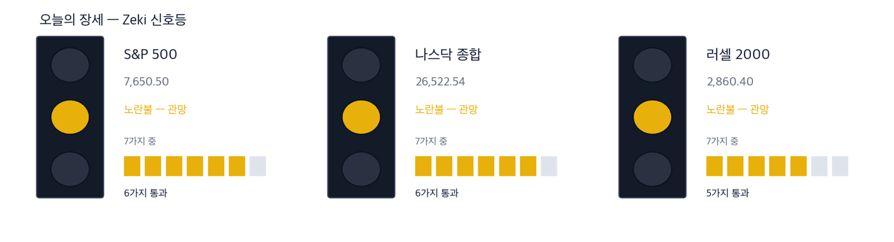
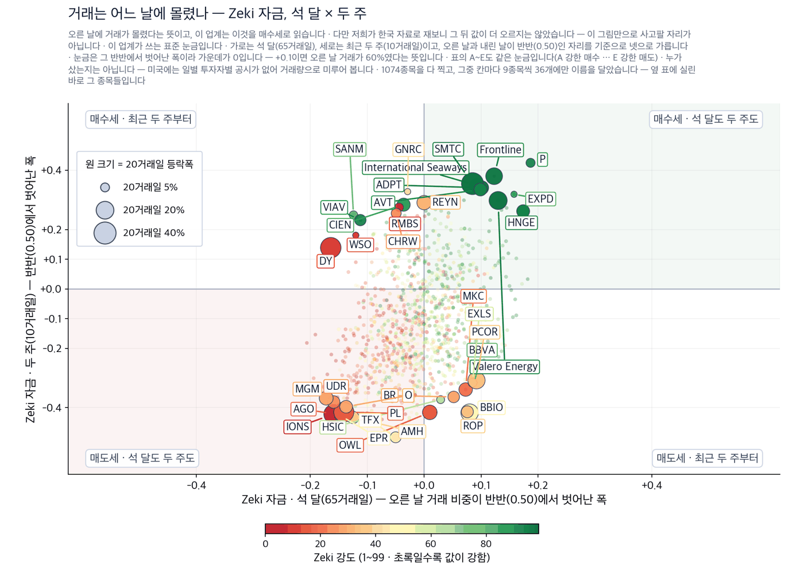
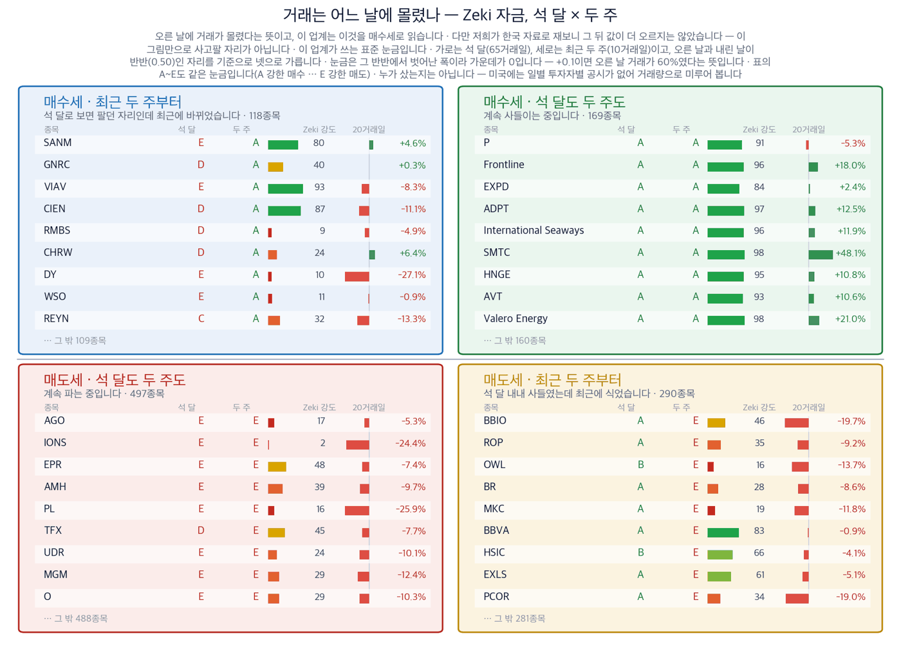

다우 51,682.64 | 나스닥 종합 26,522.54 | S&P 500 7,650.50 | 러셀 소형주 2,860.40 | 10년 국채 5.00% | Zeki 신호등 노란불 |

| 켜진 등 | 오늘 시장이 어떤 상태인지 알려 줍니다. 초록은 매수 우위, 노랑은 관망, 빨강은 매수 자제입니다. |
| 채워진 칸 | 7가지 조건 중 몇 가지를 만족하는지입니다. 많이 만족할수록 오르는 종목이 넓게 퍼져 있습니다. |
| 칸이 다 찼는데 노랑·빨강이면 | 다른 이유로 한 단계 낮춘 것입니다. 그림 아래에 그 이유를 적었습니다. |
Zeki 신호등은 시장 국면을 7가지로 재서 하나로 줄인 것입니다. 초록불은 매수 우위, 노란불은 관망, 빨간불은 매수 자제입니다. S&P 500과 나스닥 종합은 7가지 중 6가지를 지나 노란불입니다. 러셀 소형주 지수는 5가지에 그쳤습니다. 대기 — 신호등이 뜻하는 자세입니다.
지난주 금요일 서부텍사스산 원유(WTI)는 배럴당 100.30달러로 1.58% 내렸습니다. 같은 날 미국 경유 소매가는 갤런당 6.45달러로 오히려 올랐습니다. 원유 가격이 내리는데 연료 가격이 따라 내리지 않는 일은 흔치 않습니다. 올해 부족한 것은 원유가 아니라 원유를 실어 나르는 배입니다.
개장 전에 정해 두실 3가지입니다.
| 날짜 | 무엇을 보는가 | 넘으면 어떻게 되는가 |
|---|---|---|
| 9월 24일(목) | 트럼프 대통령과 시진핑 주석 회담 시작 | 희토류와 인공지능이 의제에 오르면 반도체와 소재 종목이 먼저 움직입니다 |
| 9월 24일(목) | 8월 신규 주택 판매 | 금리가 5%에 닿은 뒤 주택 수요가 꺾였는지를 처음 보여 줍니다 |
| 9월 25일(금) | 9월 소비자심리 수정치 | 연료 가격이 가계 심리를 갉아먹었는지 여기에 먼저 나타납니다 |
사우디아라비아의 동서 송유관이 이달 초 드론 공격으로 멈췄습니다. 이 송유관은 호르무즈 해협을 우회해 홍해 얀부항으로 원유를 보내던 길입니다. 그 길이 막히자 원유가 다시 해협으로 몰렸습니다. 페르시아만에서 유조선을 하루 빌리는 값이 100만 달러를 넘었습니다. 배럴로 치면 26달러이고, 원유 가격의 4분의 1입니다. 평소 운임은 화물 가격의 아주 작은 부분입니다. 세계 유조선 900척 가운데 15%가 지금 오만 앞바다에 묶여 있습니다. 희망봉으로 돌아가는 배는 왕복에 2주가 더 걸립니다. 정유사가 치르는 값은 원유 가격에 운임을 더한 값입니다. 그래서 원유가 내려도 주유소 값은 내리지 않았습니다. (월스트리트저널)
| 오케아니스 에코 탱커스(ECO) | 근거 확실 |
| 종가 | 당일 | 한 주 | 20거래일 | 석 달 | Zeki 강도 | Zeki 자금 | 고점 대비 |
|---|---|---|---|---|---|---|---|
| 84.95달러 | -1.56% | +11.56% | +32.53% | +61.87% | 98 | A | -1.6% |
| 누가 | 오케아니스 에코 탱커스, 대형 원유 운반선을 가진 회사입니다. |
| 무엇을 | 배를 빌려주는 값이 오르면 그대로 매출이 됩니다. |
| 언제 | 동서 송유관이 멈춘 이달 초부터입니다. |
| 어디서 | 뉴욕 증권거래소에 상장돼 있습니다. |
| 왜 | 해협으로 원유가 다시 몰리면서 배가 부족하기 때문입니다. |
| 어떻게 | 오만 앞바다의 짧은 환적 운항이 배를 묶어 두고 있습니다. |
| 프론트라인(FRO) | 근거 확실 |
| 종가 | 당일 | 한 주 | 20거래일 | 석 달 | Zeki 강도 | Zeki 자금 | 고점 대비 |
|---|---|---|---|---|---|---|---|
| 51.42달러 | -4.83% | +4.49% | +18.04% | +25.63% | 96 | A | -4.8% |
| 누가 | 프론트라인, 대형 원유 운반선 선단을 가진 회사입니다. |
| 무엇을 | 이 명단에서 하루 거래가 가장 많은 종목입니다. |
| 언제 | 9월 18일 하루에는 4.83% 내렸습니다. |
| 어디서 | 뉴욕 증권거래소에 상장돼 있습니다. |
| 왜 | 서아프리카에서 중국으로 가는 항로 운임도 함께 올랐기 때문입니다. |
| 어떻게 | 희망봉 우회로 배가 2주씩 더 묶이면서 공급이 줄었습니다. |
| 인터내셔널 시웨이스(INSW) | 근거 확실 |
| 종가 | 당일 | 한 주 | 20거래일 | 석 달 | Zeki 강도 | Zeki 자금 | 고점 대비 |
|---|---|---|---|---|---|---|---|
| 111.15달러 | +0.56% | +7.24% | +11.87% | +31.55% | 96 | A | +0.0% |
| 누가 | 인터내셔널 시웨이스, 원유와 석유제품을 함께 나르는 회사입니다. |
| 무엇을 | 두 시장에 걸쳐 있어 한쪽이 식어도 다른 쪽이 받칩니다. |
| 언제 | 9월 18일 종가가 1년 고점과 같은 자리입니다. |
| 어디서 | 뉴욕 증권거래소에 상장돼 있습니다. |
| 왜 | 원유 운임과 석유제품 운임이 함께 오르고 있기 때문입니다. |
| 어떻게 | 얀부항이 원유를 싣지 못하면서 항로가 길어졌습니다. |
원유를 나르는 배와 경유·휘발유를 나르는 배는 다릅니다. 주유소 값을 정하는 것은 석유제품을 나르는 배입니다. 9월 18일 거래량이 늘면서 오른 명단에 토름이 올랐습니다. (IBD) 경유 가격이 오른 그날 석유제품 운송 회사로 돈이 들어갔다는 뜻입니다.
| 토름(TRMD) | 근거 있음 |
| 종가 | 당일 | 한 주 | 20거래일 | 석 달 | Zeki 강도 | Zeki 자금 | 고점 대비 |
|---|---|---|---|---|---|---|---|
| 38.23달러 | +4.37% | +8.98% | +23.08% | +29.99% | 94 | C | +0.0% |
| 누가 | 토름, 석유제품 운반선을 가진 회사입니다. |
| 무엇을 | 경유와 휘발유를 나릅니다. 원유는 나르지 않습니다. |
| 언제 | 9월 18일 4.37% 올라 1년 고점에서 마쳤습니다. |
| 어디서 | 나스닥에 상장돼 있습니다. |
| 왜 | 경유 소매가가 갤런당 6.45달러로 오르고 있기 때문입니다. |
| 어떻게 | 원유 운반선이 묶이면 석유제품 운반선도 함께 부족해집니다. |
운임이 오르면 정유사는 손해라고 읽기 쉽습니다. 바다 건너 원유를 사 오는 정유사는 실제로 그렇습니다. 그러나 미국 멕시코만의 정유사는 사정이 다릅니다. 이들은 대부분 국내 원유를 파이프로 받아 호르무즈 운임을 치르지 않습니다. 원유 가격은 내리고 경유 가격은 오르면 이들의 마진은 넓어집니다. 발레로에너지는 석 달 동안 74.90% 올라 1년 고점에서 한 주를 마쳤습니다.
| 발레로에너지(VLO) | 근거 확실 |
| 종가 | 당일 | 한 주 | 20거래일 | 석 달 | Zeki 강도 | Zeki 자금 | 고점 대비 |
|---|---|---|---|---|---|---|---|
| 413.28달러 | +0.18% | +5.86% | +21.02% | +74.90% | 98 | A | +0.0% |
| 누가 | 발레로에너지, 미국 최대 규모의 정유 회사입니다. |
| 무엇을 | 원유를 사서 경유와 휘발유로 만들어 팝니다. |
| 언제 | 9월 18일 0.18% 올라 1년 고점에서 마쳤습니다. |
| 어디서 | 멕시코만 연안에 정유 설비가 몰려 있습니다. |
| 왜 | 원유 가격은 내리고 석유제품 값은 올라 마진이 넓어지기 때문입니다. |
| 어떻게 | 파이프로 원유를 받아 해상 운임을 거의 치르지 않습니다. |
| 종목 | ①20거래일 상승 | ②강도 90↑ | ③자금 석 달 A~B | ④두 주째 유지 | 충족 | 근거의 무게 |
|---|---|---|---|---|---|---|
| 오케아니스 에코 탱커스(ECO) | O | O | O | O | 4/4 | 근거 확실 |
| 프론트라인(FRO) | O | O | O | O | 4/4 | 근거 확실 |
| 인터내셔널 시웨이스(INSW) | O | O | O | O | 4/4 | 근거 확실 |
| 티케이 탱커스(TNK) | O | O | O | O | 4/4 | 근거 확실 |
| DHT 홀딩스(DHT) | O | O | O | O | 4/4 | 근거 확실 |
| 토름(TRMD) | O | O | X | O | 3/4 | 근거 있음 |
| 스콜피오 탱커스(STNG) | O | X | O | O | 3/4 | 확인 필요 |
| 발레로에너지(VLO) | O | O | O | O | 4/4 | 근거 확실 |
네 칸은 ①20거래일 상승 ②Zeki 강도 90 이상 ③Zeki 자금 석 달 A 또는 B ④최근 두 주에 값이 약해지지 않았는가입니다. O의 수가 딱지를 정합니다. 8곳 가운데 6곳이 4가지를 모두 넘었고, 그 6곳이 모두 같은 이유로 오르고 있습니다.
미국에는 투자자 주체별 일별 공시가 없습니다. 기관이 무엇을 샀는지 그날그날 알 수 있는 자료가 없다는 뜻입니다. 그래서 오른 날과 내린 날의 거래량을 견주어 Zeki 자금으로 잽니다. 이것은 추정이지 집계가 아닙니다. 9월 18일 종가 기준 1,074종목을 쟀습니다.

| 점 하나 | 종목 하나입니다. 가로·세로 위치가 두 값을 그대로 나타내고, 가운데 가로·세로로 그어진 두 선이 기준선입니다. 네 귀퉁이의 이름표가 그 칸의 뜻입니다. |
| 점 크기 | 최근 20거래일 등락폭입니다. 오르든 내리든 크게 움직였으면 큰 점입니다. |
| 점 색 | Zeki 강도입니다. 초록일수록 주가가 시장에서 강합니다. |
| 30종목만 | 이름이 겹치면 못 읽기 때문입니다. 가운데 몰린 나머지는 움직임이 거의 없는 종목들이라 뺐습니다. |

| 이 그림이 말하지 않는 것 | 같은 기간의 거래와 등락을 나란히 놓은 것입니다. 앞날을 맞히지는 못합니다 — 저희가 미국 21년치로 재 보니 네 칸의 그 뒤 성적이 서로 구별되지 않았습니다. 가장 높은 등급과 가장 낮은 등급의 차이도 0.03%p로 사실상 없었습니다. 그래서 이 그림은 지금 어디에 있는지를 보는 자리이지 사고팔 자리가 아닙니다. 그리고 누가 샀는지는 알 수 없습니다 — 미국에는 투자자별 일별 공시가 없어 거래량으로 미루어 볼 뿐입니다. |
| 네 칸 | 가로와 세로 두 값이 각각 기준선을 넘었는지로 넷을 가릅니다. 오른쪽 위는 둘 다 넘은 곳, 왼쪽 아래는 둘 다 못 넘은 곳, 나머지 두 칸은 한쪽만 넘은 곳입니다. 칸 이름이 그 칸에 든 종목의 상태를 한 문장으로 적어 둔 것입니다. |
| 가운데 두 칸 | 두 기간을 비교하는 자리입니다. 글자 A~E가 있으면 이 업계가 쓰는 표준 등급으로, A는 강한 매수, B는 매수 우세, C는 매수와 매도가 반반, D는 매도 우세, E는 강한 매도를 뜻합니다(전체를 다섯으로 나눈 순위라 A가 상위 20%입니다). 숫자가 있으면 그 기간에 산 양에서 판 양을 뺀 것입니다. |
| 칸마다 9종목 | 그 칸에서 움직임이 가장 큰 순서입니다. 나머지는 칸 아래에 몇 종목인지만 적었습니다. 옆 산점도가 이름을 다는 종목이 바로 이 9종목씩입니다. |
| 20거래일 막대 | 0을 가운데 두고 오른쪽이 상승, 왼쪽이 하락입니다. 길이는 같은 칸 안에서만 서로 비교하십시오 — 칸마다 기준이 다릅니다. |
| Zeki 강도 | 1~99 순위입니다. 막대가 길수록, 초록에 가까울수록 그 종목의 주가가 시장에서 강합니다. |
| 종목 | Zeki 자금 석 달 | 넘어야 할 거래량 (50일 평균) | 최근 두 주 |
|---|---|---|---|
| 오케아니스 에코 탱커스(ECO) | A | 570,506 | +22.12% |
| 프론트라인(FRO) | A | 2,495,476 | +13.21% |
| 인터내셔널 시웨이스(INSW) | A | 590,764 | +8.71% |
| 티케이 탱커스(TNK) | A | 441,564 | +9.90% |
| DHT 홀딩스(DHT) | B | 3,287,428 | +15.26% |
| 토름(TRMD) | C | 910,996 | +11.85% |
| 스콜피오 탱커스(STNG) | B | 778,630 | +8.80% |
| 발레로에너지(VLO) | A | 2,876,662 | +11.49% |
가운데 칸이 A나 B이면 오른 날에 거래가 몰렸다는 뜻입니다. 토름만 C입니다. 오른쪽 칸의 거래량을 넘는 날이 확인 신호입니다.
| 근거의 무게 | 종목 | S&P 500을 이긴 수 | 지수를 웃돈 폭 | 지수를 밑돈 폭 | 전부 평균 |
|---|---|---|---|---|---|
| 근거 확실 | 18 | 14 / 18 | +5.12%p | -1.31%p | +3.69%p |
| 근거 있음 | 7 | 4 / 7 | +3.65%p | -3.05%p | +0.78%p |
| 확인 필요 | 9 | 4 / 9 | +1.73%p | -1.24%p | +0.08%p |
| 근거 없음 | 3 | 0 / 3 | — | -1.00%p | -1.00%p |
| 테마 제외 | 1 | 0 / 1 | — | -5.55%p | -5.55%p |
| 근거 확실 18 | +3.69%p | ||||||
| 근거 있음 7 | +0.78%p | ||||||
| 확인 필요 9 | +0.08%p | ||||||
| 근거 없음 3 | −1.00%p | ||||||
| 테마 제외 1 | −5.55%p |
가운데 선이 S&P 500입니다. 오른쪽이 웃돈 것, 왼쪽이 밑돈 것입니다. 이름 옆 회색 숫자는 그 칸의 종목 수입니다.
근거 확실 18종목 가운데 14종목이 S&P 500을 이겼습니다. 이긴 14종목은 평균 5.1%p 웃돌았고, 진 4종목은 평균 1.3%p 밑돌았습니다. 전부 합치면 지수보다 +3.7%p 입니다.
판정 진행. 두 시장 합쳐 5거래일(한 주)이 찬 것 24건 / 필요 60건. 60건이 차면 미리 정해 둔 방식으로 한 번 판정하고 그 결과를 그대로 싣습니다. 그때까지 위 숫자는 중간 경과입니다.
Zeki 강도는 저희가 보는 1,098종목 가운데 값이 몇 등인지를 1에서 99로 매긴 것입니다. 90이 넘으면 상위 10% 안에 든다는 뜻입니다. Zeki 자금은 오른 날에 거래가 얼마나 몰렸는지를 A에서 E로 매긴 것입니다. 저희가 다른 시장 자료로 재 보니 이 등급이 다음 달 값을 맞히지는 못했습니다. 그래서 이것은 마지막 관문으로만 씁니다. 먼저 이야기가 맞고 값이 따라왔는지를 보고, 그 다음에 거래까지 따라왔는지를 봅니다.
오늘 판은 월스트리트저널 9월 21일자 지면과 IBD 9월 18일·9월 20일 기사를 읽고 지었습니다. 값은 저희가 직접 잰 것이며 9월 18일 종가 기준입니다.
이번 주 실적은 한산합니다. 코스트코(COST)와 다든(DRI), KB홈(KBH)이 실적을 발표합니다. 세 곳 모두 연료비와 금리를 한꺼번에 겪는 회사여서, 비용을 값에 얹을 수 있는지를 보여 줍니다.